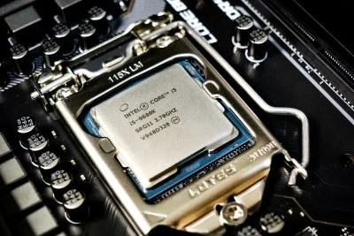
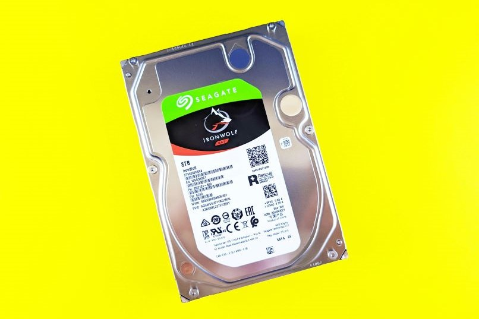

CPU - Components
Definition
A central processing unit (CPU) is a hardware component that’s the core computational unit in a computer. Computers and other smart devices convert data into meaningful information through the CPU’s processing power. The CPU is the brain of a computer, responsible for executing instructions and performing calculations. It is the main component that acts as the control center of a computing device, working alongside other hardware components to enable the device to function effectively. The CPU, also known as the central processor or main processor, is crucial for processing input, storing data, and producing output results. It is the primary component that defines a computing device’s capabilities and performance.
Components of a CPU
1. Control Unit
A Control unit is a critical element within the Central Processing Unit (CPU) that oversees instruction processing and data flow coordination within the CPU and among other computer components. It serves as the nerve center of the CPU, responsible for decoding instructions, managing the flow of data, and directing the operations of the Arithmetic Logic Unit (ALU). Registers within the control unit store essential temporary data and control information required for executing instructions effectively. Additionally, the control unit generates clock signals to synchronize the activities of various CPU components, ensuring smooth operation.
The Control unit’s significance lies in its ability to ensure the efficient execution of instructions, leading to the effective functioning of the CPU. By managing the sequence and timing of instructions, the control unit plays a crucial role in coordinating the activities of different CPU components, such as the ALU and memory unit. This coordination is essential for processing data accurately and producing output results in a timely manner. A well-designed control unit contributes to the overall performance and speed of a computing device by optimizing the execution of instructions.
Historically, the concept of a control unit has been fundamental in the evolution of computing systems. Pioneers like John von Neumann and Alan Turing played significant roles in developing early control mechanisms for computers. As computing technology advanced, control units became more sophisticated, capable of handling complex instruction sets and contributing to the overall efficiency of CPUs. The evolution of control units reflects the continuous improvement in computing capabilities and the importance of efficient data processing in modern computing systems.
2. Registers
Registers are small, high-speed memory storage locations within the CPU that are used to store data temporarily during processing. These registers are crucial for the efficient operation of the CPU as they hold instructions, memory addresses, or any other data that the CPU needs to access quickly. Registers are the fastest form of memory in a computer system, providing the CPU with rapid access to the data it requires for executing instructions. They are used to store intermediate results of calculations, control information, and memory addresses for data manipulation. In a CPU, registers play a vital role in the overall processing of data. They are used by the control unit to control the operation of the CPU and manage the flow of data between different components. Registers are also utilized by the arithmetic logic unit (ALU) for performing arithmetic and logical operations on data. Different types of registers exist within a CPU, such as general-purpose registers, special-purpose registers, and program counter registers, each serving specific functions to facilitate efficient data processing and manipulation. Registers are essential components of a CPU that contribute significantly to its performance and functionality. By providing quick access to data and instructions, registers help in speeding up the execution of programs and calculations. The efficient utilization of registers within the CPU enhances the overall processing speed and responsiveness of a computing device. Registers are integral to the CPU’s ability to execute instructions, perform calculations, and manage data flow effectively, highlighting their critical role in the core computational operations of a computer system.
3. ALU
ALU is the Arithmetic Logic Unit, a fundamental component of a CPU responsible for performing arithmetic and logical operations on data. It is a crucial part of the CPU that carries out tasks such as addition, subtraction, multiplication, division, and logical comparisons. The ALU is designed to execute mathematical and logical operations swiftly and efficiently, contributing significantly to the overall processing power of the CPU. Invented by John Presper Eckert and John William Mauchly, the ALU is a key element in the CPU’s ability to process data and execute instructions. The ALU works in conjunction with the control unit to process instructions and data within the CPU. It performs arithmetic operations like addition and subtraction and logical operations such as AND, OR, and NOT. The ALU operates on binary data, manipulating bits to carry out computations. Variations of ALUs exist, including those with different word lengths, capabilities, and speed.



The ALU’s performance directly impacts the speed and efficiency of the CPU, influencing the overall computing capabilities of a system. In modern CPUs, the ALU is a critical component that contributes to the device’s processing speed and efficiency. As technology advances, ALUs have become more sophisticated, incorporating features like pipelining and parallel processing to enhance performance. The ALU’s ability to handle complex calculations and logical operations swiftly is essential for executing tasks in applications ranging from basic computing to advanced scientific simulations. The ALU’s role in processing data underscores its importance in determining the overall performance and capabilities of a CPU.
4. Memory Management Unit
The Memory management unit is a crucial component of a CPU responsible for handling memory-related operations within a computer system. It works in conjunction with the CPU to manage memory access, translation of virtual addresses to physical addresses, and memory protection. The Memory management unit plays a vital role in optimizing memory usage, ensuring efficient data storage and retrieval, and enhancing overall system performance. This unit helps in organizing and controlling the flow of data between the CPU and the memory subsystem, ensuring that data is stored and accessed accurately. In terms of measurements, the Memory management unit operates at a level that involves translating virtual memory addresses to physical memory addresses. It helps in maintaining memory protection by controlling access to specific memory locations, ensuring data security and preventing unauthorized access. The Memory management unit also assists in implementing memory hierarchy, which includes various levels of memory storage such as cache memory, RAM, and secondary storage devices like hard drives, to enhance data processing speed and efficiency. The importance of the Memory management unit lies in its ability to optimize memory usage, enhance system performance, and ensure data security within a computer system. By efficiently managing memory access and translation processes, this unit contributes to the smooth functioning of the CPU and the overall computing device. The Memory management unit is essential for maintaining data integrity, preventing memory conflicts, and enabling seamless communication between the CPU and memory components, ultimately leading to improved computational capabilities and enhanced user experience.
5. Clock
The Clock is a crucial component of a CPU responsible for synchronizing and regulating the execution of instructions within a computer system. It acts as a timing mechanism that coordinates the flow of data and operations within the CPU and other hardware components. The Clock generates electrical signals at a specific frequency, measured in Hertz (Hz), to control the pace at which instructions are processed and data is transferred between different parts of the CPU. In the realm of computer architecture, the Clock plays a fundamental role in ensuring that operations within the CPU are carried out in a coordinated and orderly manner. The Clock signal is used to synchronize the activities of various components such as the Control Unit, Arithmetic Logic Unit (ALU), and memory unit. By providing a consistent rhythm for processing tasks, the Clock helps maintain the integrity and efficiency of the CPU’s operations, ultimately contributing to the overall performance of the computing device. Variations of Clock speeds, measured in gigahertz (GHz), are indicative of a CPU’s processing power and performance capabilities. Higher Clock speeds generally allow for faster execution of instructions and improved computational efficiency. Over the years, advancements in CPU technology have led to the development of CPUs with increasingly higher Clock speeds, enabling them to handle more complex tasks and demanding applications. The Clock’s significance lies in its ability to orchestrate the intricate dance of computations within a CPU, underscoring its pivotal role in the functioning of modern computing systems.